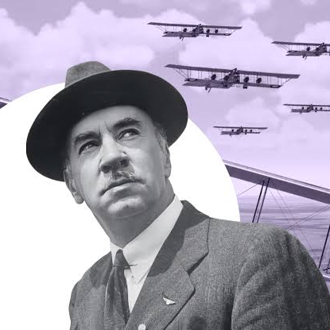
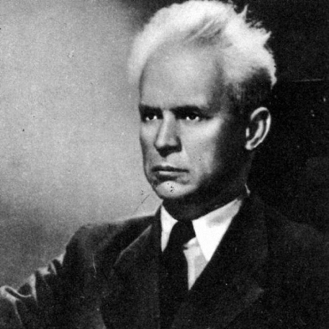

Ігор Сікорський
І́гор Іва́нович Сікорський (25 травня [6 червня] 1889, Київ, Російська імперія — 26 жовтня
1972, Істон, Коннектикут, США) — видатний авіаконструктор українського походження,
який працював у Російській імперії та Сполучених Штатах Америки.
Творець перших у світі літаків: чотиримоторного «Руський витязь» (1913 рік), важкого
чотиримоторного бомбардувальника і пасажирського літака «Ілля Муромець» (1914),
трансатлантичного гідроплана (1934), серійного гелікоптера одногвинтової схеми (1942),
Sikorsky S-29-A. Конструктор першого в США літака-амфібії.
У 1918 році емігрував до США, де в 1923-у році заснував компанію Sikorsky Aircraft.

Олександр Довженко
Олекса́ндр Петро́вич Довже́нко (29 серпня (10 вересня) 1894, хутір В'юнище, нині у межах смт
Сосниця, Чернігівська губернія, Російська імперія, нині Корюківський район, Чернігівська
область, Україна — 25 листопада 1956, Передєлкіно, Московська область, Російська РФСР, СРСР)
— український письменник, кінорежисер, кінодраматург, художник, класик світового
кінематографа. Режисер культових кінострічок «Україна в огні», «Земля», «Звенигора»,
«Арсенал». Заслужений діяч мистецтв УРСР (1940), народний артист РРФСР (1950). Лауреат
Ленінської (1959, посмертно) та двох Сталінських премій (1941, 1949), кавалер Ордена Леніна
(1935).
Предки Олександра Довженка були чумаками, що переселилися з Полтавщини у Сосницю ще у XVIII
столітті. Засновником роду по батьковій лінії був Карпо, що народився 1760 року. У Карпа був
син Григорій (народився 1786 року), у Григорія — Тарас (народився 1812 року), який разом із
дружиною Марією мав багато синів, що їх у Сосниці по-вуличному величали Тарасовичами, а
серед них — і Семен, дід Олександра, а в Семена — Петро, Самійло і Микола, відповідно батько
й дядьки Олександра Петровича. У В'юнищах рід Довженків поважали аж настільки, що з
вісімдесятих років XIX століття та вулиця, якій пізніше дали ім'я Шевченка, називалася
просто Довженковою.
Мати Одарка Єрмолаївна, до шлюбу Цигипа, була донькою Єрмолая Цигипи, сосницького
ткача-художника.